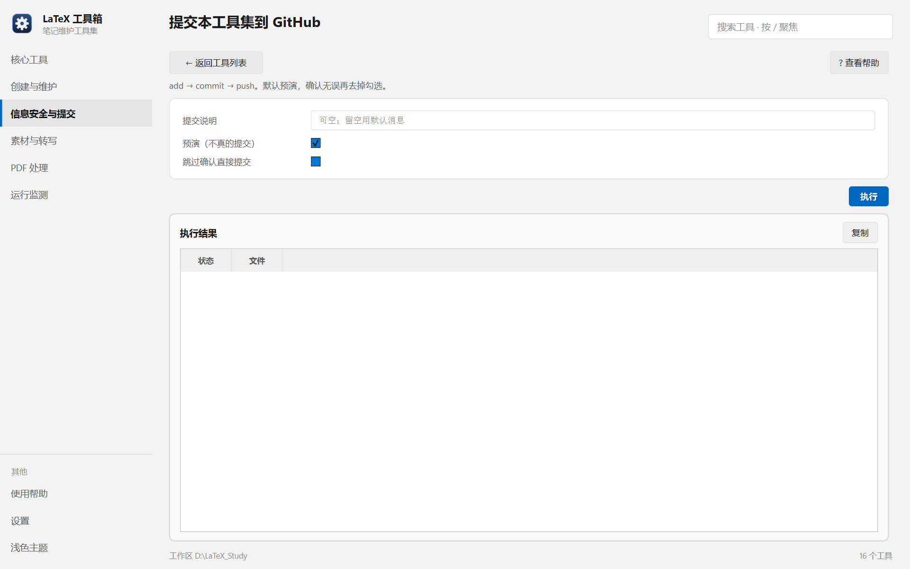

帮助目录 · 信息安全与提交
把 Tools/ 这个仓库 add → commit → push。默认预演，看到文件清单再决定。
| 面板入口 | 信息安全与提交 → 卡片「提交本工具集」→ 填说明 → 执行 |
|---|---|
| 命令行 | python tools/commit/commit.py |

提交说明可空；「预演」默认勾着，只列出将提交的文件。
--log。| 项 | 说明 |
|---|---|
| 提交说明 | 写进 commit message。 |
| 预演（不真的提交） | 默认开。只列出将提交的文件，不动 git。 |
| 跳过确认直接提交 | 默认关。开了会一路走到 push。 |
python tools/commit/commit.py --dry-run python tools/commit/commit.py 'fix: 修 xx' python tools/commit/commit.py --log 'feat: 加了 xx'
| 内容 | 位置 |
|---|---|
| 被提交的仓库 | 程序目录（Tools/）这个 git 仓库 |
| CHANGELOG | 程序目录下的 CHANGELOG.md |
| 防护 | 提交前自动跑一次本机信息扫描（工具 10） |
config.json、*.conf、_data/ 这类本机数据，说明 .gitignore 漏了规则，先补规则再提交。Q：提示「没有改动，无需提交」
A：工作区是干净的。若你刚改过文件，检查是不是改在了 _build/、_dbg/ 这类被忽略的目录里。
Q：push 被拒（non-fast-forward）
A：远程有你本地没有的提交。先 git pull --rebase，再提交。
Q：提交被钩子拦下
A：那是本机信息扫描。按提示改；确属误报再 --no-verify。
Q：预演和实际提交的文件数不一样？
A：预演之后你又改了文件。重新预演一次。